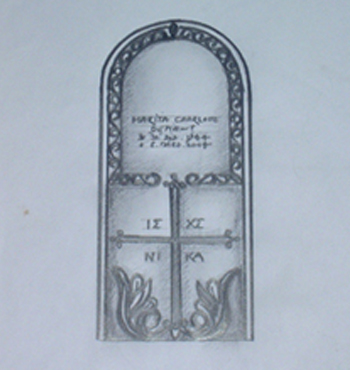
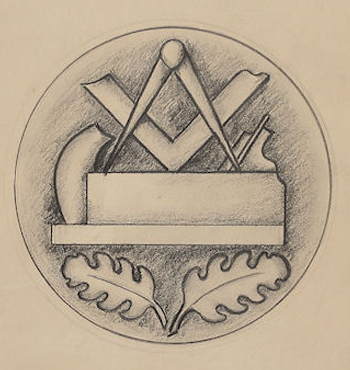

Beratung
Wir hören zu, klären Wünsche, Friedhofsvorgaben und erste Vorstellungen.
Steinmetzwerkstatt Harich
Wir nehmen Unsicherheit aus dem Prozess und übersetzen Gedanken, Persönlichkeit und Symbole Schritt für Schritt in eine stimmige Form.
Wie wir Sie begleiten
Viele Angehörige wissen am Anfang nicht, welche Form, welcher Stein oder welche Schrift einem Menschen gerecht wird. Genau hier beginnt die persönliche Beratung: ruhig, aufmerksam und mit Erfahrung aus Meisterhand.
Wir hören zu, klären Wünsche, Friedhofsvorgaben und erste Vorstellungen.
Aus Gesprächen entstehen Skizzen, Materialideen und ein stimmiges Gestaltungskonzept.
Stein, Schrift, Symbol, Oberfläche und Details werden gemeinsam festgelegt.
Das Werk wird handwerklich gefertigt, abgestimmt und fachgerecht gesetzt.
Gestaltung auf einer Seite
Die bisher getrennten Gestaltungsthemen sind hier zusammengeführt, damit der Weg zum individuellen Steinwerk ohne Umwege verständlich wird.
Idee und Entwurf
Ein persönlich gestalteter Stein bietet Hinweise auf Gedanken, Eigenschaften und Persönlichkeit eines Menschen. Im Gespräch mit Angehörigen erfassen wir charakteristische Merkmale, Vorlieben und Werte.
Daraus entstehen erste Ideen, Entwurfszeichnungen und Modelle. Sie dienen als Grundlage für weitere Gespräche und für die handwerkliche Umsetzung.

Entstehung und Umsetzung
Mit handwerklichem Geschick und moderner Steinbearbeitungstechnik entsteht aus dem ausgewählten Naturstein die endgültige Form. Proportionen, Schrift, Ornamente und Oberflächen werden sorgfältig geprüft.
So wird aus dem Entwurf ein Denkmal, das im Detail trägt, was im Gespräch begonnen hat.

Schrift und Symbol
Die gehauene Inschrift benennt die Person und verbindet sich dauerhaft mit dem Stein. Schriftart, Rhythmus und Platzierung können Hinweise auf Lebensinhalt und Wesensart geben.
Ornamente bereichern die Fläche, Symbole tragen Bedeutung. Auch persönliche Widmungen oder Gravuren können unter fachlicher Anleitung entstehen.

„Unsere Herausforderung ist es, Gedanken, Anschauungen und Persönlichkeit eines Menschen in Stein zu gestalten, um so Einzigartiges und Unvergängliches zu schaffen.“
Bruno Johannes Harich
Kontakt
Ob erster Gedanke, konkrete Frage oder Wunsch nach einem individuellen Entwurf: Sie erreichen die Steinmetzwerkstatt Harich telefonisch, per E-Mail oder über das kurze Formular.